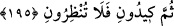

etseniz de sizin için birdir.
Ey müşrikler! “Doğru yolu göstermeleri” sizi gayelerinizi elde etmeyi sağlayacak
şeylere iletmeleri “için onlara duâ etseniz,” istediğiniz hususunda “size karşılık
vermezler.” Size Allah Teâlâ’nın icabet edip karşılık verdiği gibi icabette
bulunamazlar.
Ey müşrikler! “Onlara” putlara “duâ etseniz de sükût etseniz de sizin için birdir.”
İsteklerinizi putlara ifade etmenizle, bir şey söylemeyip susmanız arasında bir fark
yoktur. Çünkü her iki durumda da taştan oldukları için onların hallerinde bir değişiklik
olmayacağı gibi sizin durumunuzda da bir değişme olmayacaktır.
194. (Ey kâfirler!) Allah’ı bırakıp da taptıklarınız sizler gibi kullardır. (Onların
tanrılığı hakkında iddianızda) doğru iseniz, onları çağırın da size cevap versinler!
“Allah’tan başka taptıklarınız” yalvarıp ibâdet ettiğiniz putlar ve tanrı diye
isimlendirdikleriniz “da sizler gibi kullardır.” Allah’ın mülkü olmak, O’nun emrine
amâde bulunmak ve herhangi bir faydayı celp ya da zararı def etmekten âciz olmak
bakımından sizinle aynıdırlar.
Haddâdî’nin belirttiği üzere; müşrikler putlarını insan şeklinde tasvir ettiklerinden
dolayı Allah Teâlâ onları “kullar” diye isimlendirmiştir.
Putların, sizin yapmaktan âciz kaldığınız şeylere muktedir oldukları iddianızda
“doğru iseniz,” bir fayda temin etmek ve bir zorluğu gidermek hususunda “onlara duâ
edin de size karşılık versinler!”
195. Onların yürüyecekleri ayakları mı var, yoksa tutacakları elleri mi var veya
görecekleri gözleri mi var (neleri var)? De ki: “Ortaklarınızı çağırın, sonra bana
(istediğiniz) tuzağı kurun ve bana göz bile açtırmayın!”
“Onların” putların “yürüyecek ayakları mı var” ki size karşılık vermeleri mümkün
olsun. Halbuki cismânî heykellerin icabet edebilmeleri için hayat, hareket ve idrak
güçlerinin olması gerekir. Bu güçlerden herhangi bir şeye sahip olmayan katı cisimler,